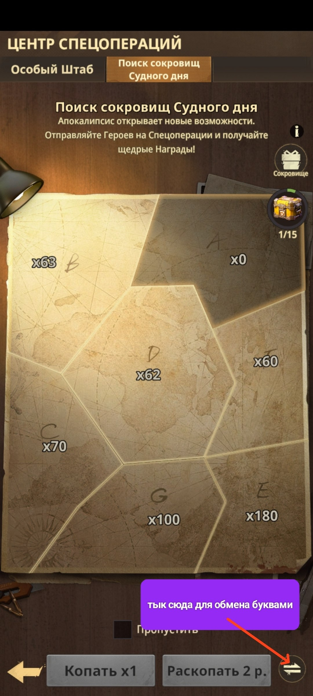
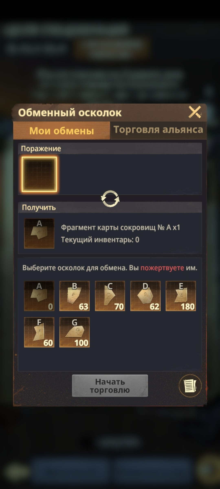
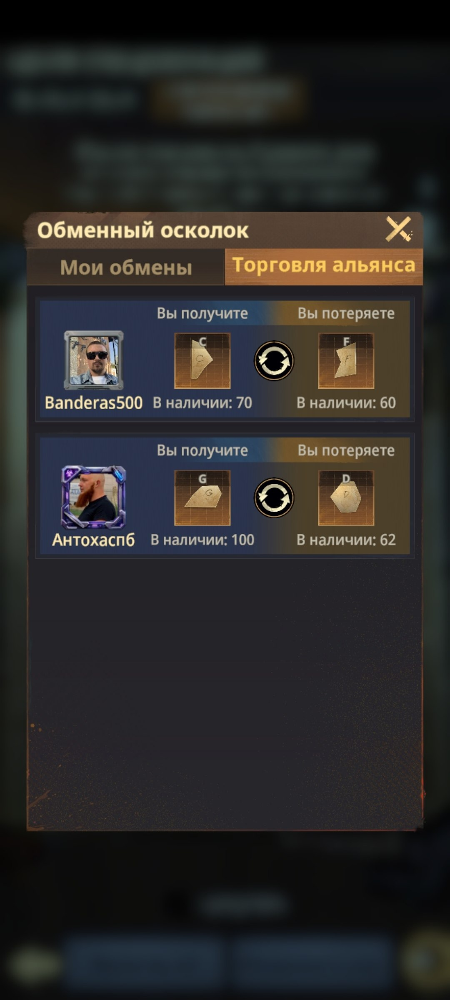

🧩 Поиск Сокровищ Судного дня
🧩 ПОИСК СОКРОВИЩ СУДНОГО ДНЯ Это развлекательная механика, в которой вам нужно собрать все 7 частей-букв карты: A, B, C, D, E, F и G. 🗺️ Когда соберёте полный набор частей, сможете открыть сундук и получить случайные награды. Каждый 15-й сундук гарантированно будет золотым. 🔄 Обмен фрагментами Недостающие буквы можно обменивать со своими соклановцами в подразделах «Обменный осколок» и «Торговля альянса». 📌 Собирайте недостающие части, обменивайтесь лишними фрагментами и постепенно закрывайте всю карту A–G.

🗺️ Карта с семью частями A–G и прогрессом сундуков

🔄 Обменный осколок для обмена буквами карты

🤝 Торговля альянса и обмен фрагментами